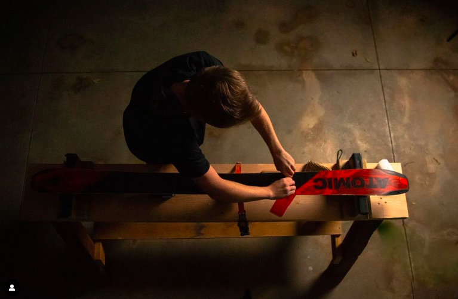
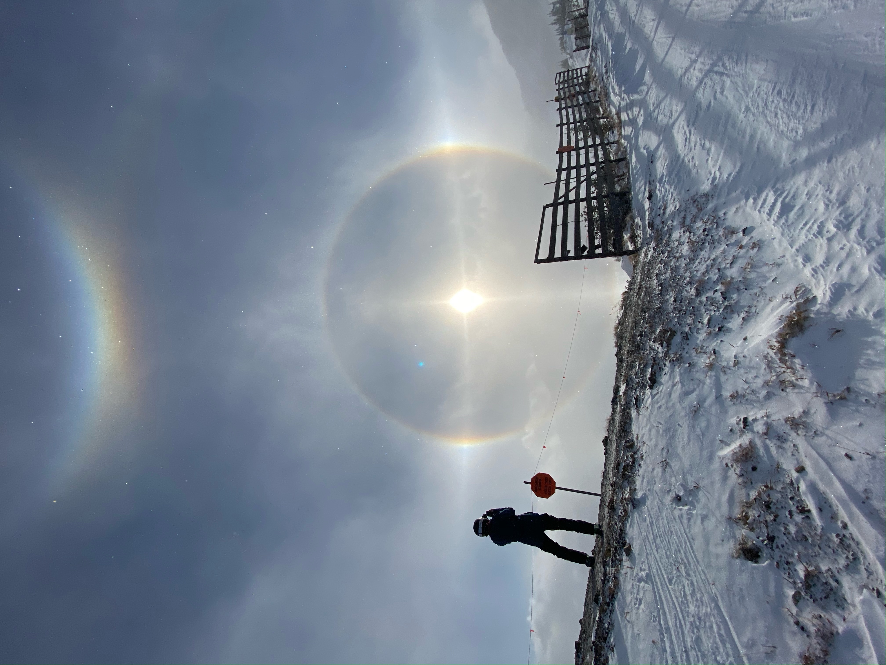

Welcome to the Wasatch Shred Shop! Here we are committed to getting you down the slopes as fast as possible and as easy as possible. We know taking care of your skis can be a chore when you have to bring them into a ski shop and have to wait days before having to go back to pick them up. With the Wasatch Shred Shop, we will come to YOU and pick up/ work on/ deliver your skis whatever time is most convenient for you!
We will fix up your skis and snowboards no matter the damage! Whether you just need wax, your edges cleaned up or even scrapes/ gashes filled, we take care of it all!
We are located in draper Utah and will be able to service most of those going to Alta ski resort and Snowbird. Because we don't have a store front yet, we will pick up your skis and deliver them back to you you whenever you like at no extra cost! If you are too far out of our range but would still like us to service your skis just ask us about it and let us see if we can accomodate you.
Quality and customer satisfaction are our top priority. We oursleves are skiers and we know what a good ski looks/rides like. We take pride in making every ski that passes through our hands the best it can be. If we find any additional problems with your skis we will let you know and sometimes we even throw in a little p-tex for free because there is nothing more satisfying than handing off a beautiful ski to a happy customer.
Hours of Opperation:
Monday-Friday: 2:30PM - 11:00PM
*Saturday: 9:00AM -d11:00 PM
Sunday: Closed
*Saturday hours are subject to change as we will likely be shredding the wasatch slopes ourselves on the weekend. Come find us at Alta!